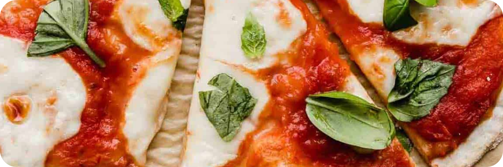

Marg Pizza!

Pizza always makes a bad day feel better, and there’s nothing nicer than a perfect slice of margherita pizza.
Pizza margherita, as the Italians call it, is a simple pizza hailing from Naples. When done right, margherita pizza features a bubbly crust, crushed San Marzano tomato sauce, fresh mozzarella and basil, a drizzle of olive oil, and a sprinkle of salt. That is all.
This pizza is simple, fresh and a guaranteed crowd pleaser. It’s a delight to make and even better to eat. How about pizza tonight?
Ingredients
- 1 (14-ounce) can crushed tomatoes, preferably San Marzano
- 3 medium garlic cloves, minced
- ¾ teaspoon salt
- ½ teaspoon sugar
- ½ teaspoon freshly ground black pepper
- 2 tablespoons extra-virgin olive oil
- Flour
- 2 (1-lb) homemade pizza doughs
- 8 oz fresh mozzarella, not packed in water, cubed
- ½ cup freshly grated Parmigiano-Reggiano
- ½ cup roughly chopped fresh basil, lightly packed
- 1 tablespoon cornmeal, for baking
Steps
- Make the Sauce: In a medium bowl, stir together the tomatoes, garlic, salt, sugar, pepper, and oil. (Alternatively, for a completely smooth sauce, you can blend the ingredients in a small food processor or blender.)
- Preheat the oven to 500°F and set an oven rack in the bottom position. Dust a 13x18-inch baking sheet with half of the cornmeal.
- On a lightly floured surface, using your hands, stretch and press one ball of dough into an 12-inch round. Transfer the dough to the cornmeal-dusted baking sheet, and gently stretch it out again so that it maintains its shape.
- Spread about ¼ cup + 2 tablespoons of the sauce over the dough, leaving a ½-inch border around the edges. Slide the baking sheet into the oven and bake for 7 minutes, until the crust is partially cooked.
- Remove from the oven, and scatter half of the mozzarella cubes over the sauce, followed by half of the Parmigiano-Reggiano. Slide the pan back into the oven and cook until the crust is golden brown and the cheese is melted and bubbling, about 4 minutes more.
- Remove the pizza from the oven and transfer to a cutting board. Sprinkle with the basil and slice.